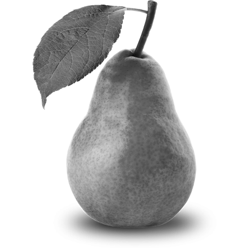

Exercise and the brain
Many evidences demonstrated that physical exercise (PE) affects brain
plasticity, influencing cognition and wellbeing (Weinberg and Gould,
2015; for review see Fernandes et al., 2017). In fact, experimental
and clinical studies have reported that PE induces structural and functional
changes in the brain, determining enormous biological, and psychological benefits.
In general, when reported PE effects, it is customary to separate the
biological aspects from the psychological ones. In fact, most of the
studies documented either the effects of PE on the brain (and then on the
cognitive functioning) or on the wellbeing (in terms of physical and mental
health). In this review, we merge both these aspects as they influence each
other. In fact, behaviorally appropriate choices depend upon efficient
cognitive functioning. Furthermore, emotional states influence cognitive
functions through specific cerebral circuitry involving prefrontal areas
and limbic structures (Barbas, 2000).
Before analyzing the benefits of PE, it is necessary to define PE precisely.
Indeed, PE is a term often incorrectly used interchangeably with physical
activity (PA) that is “any bodily movement produced by skeletal muscles
that requires energy expenditure” (World Health Organization, 2010). Then,
PA includes any motor behavior such as daily and leisure activities and it
is considered a determinant lifestyle for general health status (Burkhalter
and Hillman, 2011). Instead, PE is “a sub classification of PA that is planned,
structured, repetitive, and has as a final or an intermediate objective the
improvement or maintenance of one or more components of physical fitness”
(World Health Organization, 2010). Examples of PE are aerobic and anaerobic
activity, characterized by a precise frequency, duration and intensity.
In this review, we illustrate the biological and psychological benefits of
PE on cognition and wellbeing both in health and diseases, reporting data
from both animal and human studies. The biological basis at both molecular
and supramolecular level have been largely studied. The other aim of present
work is to report the actual evidence on the epigenetic mechanisms that
determine or modulate the biological effects of PE on the brain. In fact,
while the biologic mechanisms are sufficiently studied both at the molecular
and supramolecular levels (see Lista and Sorrentino, 2010), little is known
about the epigenetic ones. Finally, the modality with which PE should be
practiced to gain such advantages while avoiding negative consequences will
be discussed. In Table 1 are reported the inclusion and exclusion criteria
for studies discussed in this review.
Mandolesi, Laura, Arianna Polverino, Simone Montuori, Francesca Foti,
Giampaolo Ferraioli, Pierpaolo Sorrentino, and Giuseppe Sorrentino.
"Effects of physical exercise on cognitive functioning and wellbeing:
biological and psychological benefits." Frontiers in psychology 9
(2018): 509.

exercise